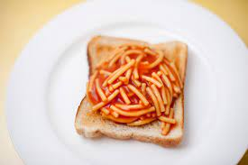

Spaghetti on Toast

Description
It's hard to go wrong with this one. What can I say, sometimes a body just needs some old fashioned spag on toast!
Ingredients
- 1 tin of spaghetti
- 2 slices of white bread
- Butter for toast
Steps
- Pop the bread in the toaster.
- While the bread is toasting, microwave the spaghetti for 1 minute.
- When the bread is toasted, butter it and cut each slice in half. Put it on a plate.
- Stir the spaghetti and then microwave for another 30 seconds.
- Pour the spaghetti on the toast to serve.